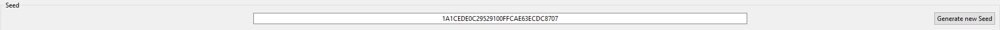
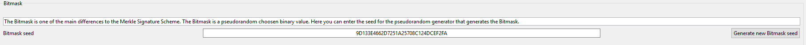
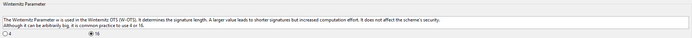
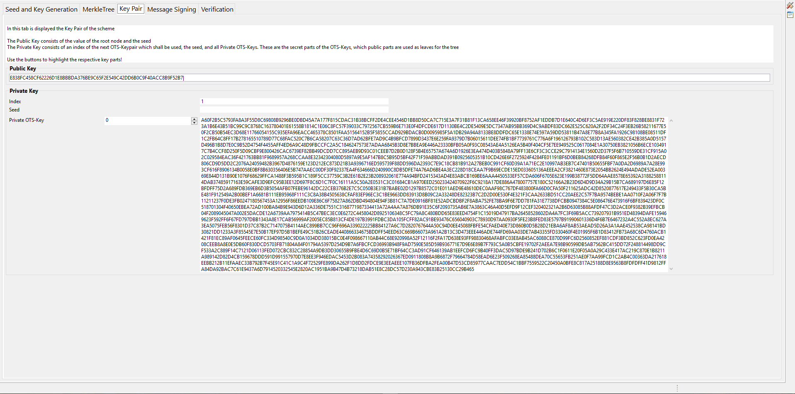
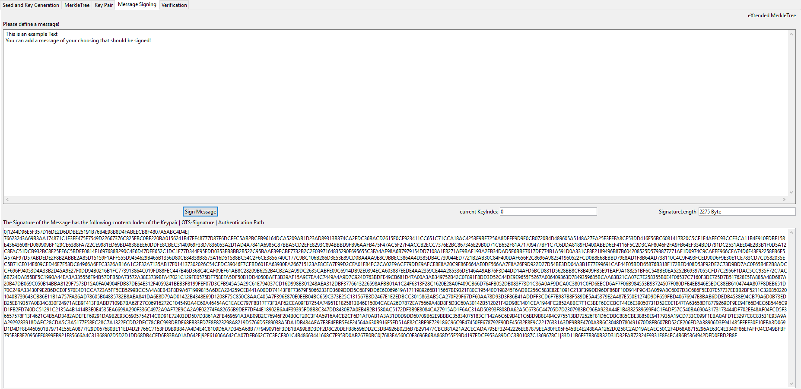
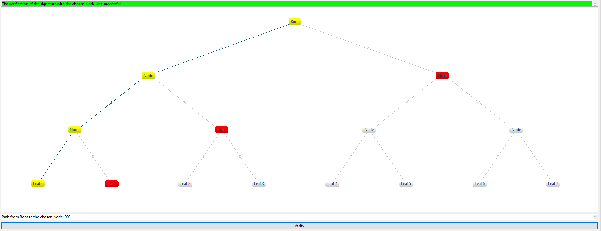

This online help explains the basic functions of the Merkle signature scheme plugin.
The plugin can be started either from the menu Visuals or from the Crypto Explorer in the Visuals tab.
Besides Merkle signatures, JCT also contains SPHINCS as an example of a modern PQC signature scheme – a good and up-to-date overview of such schemes can be found in Wikipedia [1,2]. WOTS in the variant WOTS+ is a component of both, XMSS and SPHINCS.
XMSS has been standardized by the IETF: The Request for Comments (RFC) 8391 [6] was published in May 2018 for the variants XMSS (a single-tree scheme) and XMSS^MT (a multi-tree variant of XMSS).
In 2019, the US National Institute of Standards and Technology (NIST) announced its intention [5] to promulgate standards for stateful hash-based signatures (HBS) based on XMSS and Leighton-Micali signatures (LMS) – in addition to the NIST PQC competition [3,4]. Hanno Boeck [10] stated: "XMSS is assumed to be post-quantum secure, but it’s a stateful scheme and thus often not a drop-in replacement for existing signature schemes."
1) Merkle signature scheme (MSS)
2) eXtended Merkle signature scheme (XMSS)
3) eXtended Merkle signature scheme MultiTree (XMSS^MT)
4) Usage
5) References and Sources
Using the Merkle signature scheme, messages can be signed quantum computer resistant. Merkle signatures belong to the category of hash-based signatures using so-called one-time signatures (OTS). As the term implies, a single key pair must only be used once. More details can be found in [11,12].
The Merkle signature consists of two parts: the one-time signature (OTS) and the Merkle tree (a binary hashtree). The advantage of Merkle trees is, that only one Merkle public key is needed for several one-time signature's public keys.
This is implemented by merging the hash values of the one-time public keys (leafs) into a single hash value at the top of the tree. This value is the root node and is the major part of the Merkle public key.

The eXtended Merkle signature scheme (XMSS) is a method based on the Merkle signature scheme. The main difference to MSS is the usage of bitmasks and L-Trees. Because of these two extensions no collision-resistant hash function is needed any more. Only a second preimage resistant hash function is needed to guarantee security. This has two advantages:
a) As a second preimage-resistant hash function is a weaker prerequisite, the XMSS is stronger (harder to break).
b) The signature can be smaller with the same level of security as when using MSS.
As one-time signature the XMSS uses the Winternitz one-time signature (WOTS). There are two different variations, WOTS+ or WOTS$. In this plugin we use the WOTS+ scheme. In both variations, there is a freely chosen number of WOTS key pairs generated out of a random seed with the help of a pseudo-random key generator. Altogether, 2^h messages with a length of m bytes can be signed.
The bitmask is a pseudo-random binary value. The bitmask is used to avoid the need of a collision-resistant hash function. Bitmasks are used in the XMSS tree and in the L-Tree. Its value is derived from the seed given in the signature.
The Winternitz parameter is used in the Winternitz one-time signature (WOTS). It determines the signature length. A larger value leads to shorter signatures but increased computation effort. It does not affect the scheme's security.
L-Trees are using the same hash functions as the XMSS-Tree, but a different bitmask. Every L-Tree has the same bitmask.
The "eXtended Merkle MultiTree signature scheme" (XMSS^MT) is based on multiple XMSS trees chained together. The advantage compared to a simple XMSS tree which has the same size, is the reduced computation effort to create the key pair. The single trees are connected, by signing the XMSS root node of a lower layer. The lowest layer eventually is used to sign messages.
Why is MultiTree key generation faster?
The single trees can be generated separately. The main tree is formed by each single tree, signing the lower levels' next tree. Of course the lowest level does not sign single trees anymore, but actual messages. So the point in time when a single tree signs the root node of another single tree, does not necessarily have be at the key generation. Certain single trees can be created just before they are needed.
In this tab you can switch between the different modes (MSS, XMSS, XMSS^MT). There is also an option to define the seed, set the Winternitz parameter, set the amount of the secret keys, and generate the secret keys.

This image shows where the seed is defined. The seed is used to generate the secret keys. It is possible to either use a self-defined numeric seed, or create a random seed with the button Generate new seed.

If the eXtended Merkle signature scheme (XMSS) is used, there is another box, where you can define the seed for the bitmask.

Despite the Winternitz parameter could have any size, here it can be set only to 4 or 16 as these are the most commonly used values.
This tab is used to display the created Merkle tree. The tree consists of leafs, the nodes, and the root node. The root node is also known as the Merkle public key. If a node is chosen, the path to the root node is marked yellow. The verification path, which is part of the signature, is marked red. If a node or a leaf is chosen its hash value is displayed in the upper left area. The full tree can be viewed by clicking Hide Description. If you are in the XMSS^MT mode, the multitrees will display in different colors.

The public key and the private key are shown in the third tab.
This tab is used to generate signatures. The signature are generated using the keys defined in tab 1. With the Interactive Signature Generator you can follow the signature generation process step by step. If you choose Simple Signature Generation you can enter a user defined text, and after pressing Sign message this message is going to be signed, using the Merkle signature scheme.

This picture shows the signature of a message and the length of the signature in bytes. The signature has the following structure: Index of the key pair | OTS signature | Authentication path.
The signature created before can be verified in this tab. The correct leaf (this is the one with the correct index) is pre-selected when opening this tab. Clicking on Verify tries to verify the signature with the selected leaf by calculating the WOTS public key of the WOTS signature. Then this WOTS key is used to calculate the corresponding leaf of the L-Tree.

If you click Created Signatures it will display all your signatures. You can also choose another (wrong) leaf. If you do so, the verification will fail.
Additional Information about Post-Quantum Cryptography (PQC) and Merkle tree-based signatures can be found here: